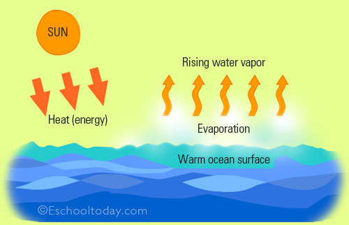

Evaporation is when the sun heats up water in rivers or lakes or the ocean and turns it into vapor or steam.
The water vapor or steam leaves the river, lake or ocean and goes into the air.

Evaporation from the oceans is the primary mechanism supporting the surface-to-atmosphere portion of the water cycle.
After all, the large surface area of the oceans (over 70 percent of the Earth's surface is covered by the oceans) provides the opportunity for such large-scale evaporation to occur.
On a global scale, the amount of water evaporating is about the same as the amount of water delivered to the Earth as precipitation.
This does vary geographically, though. Evaporation is more prevalent over the oceans than precipitation, while over the land, precipitation routinely exceeds evaporation.
Most of the water that evaporates from the oceans falls back into the oceans as precipitation.
Only about 10 percent of the water evaporated from the oceans is transported over land and falls as precipitation. Once evaporated, a water molecule spends about 10 days in the air.